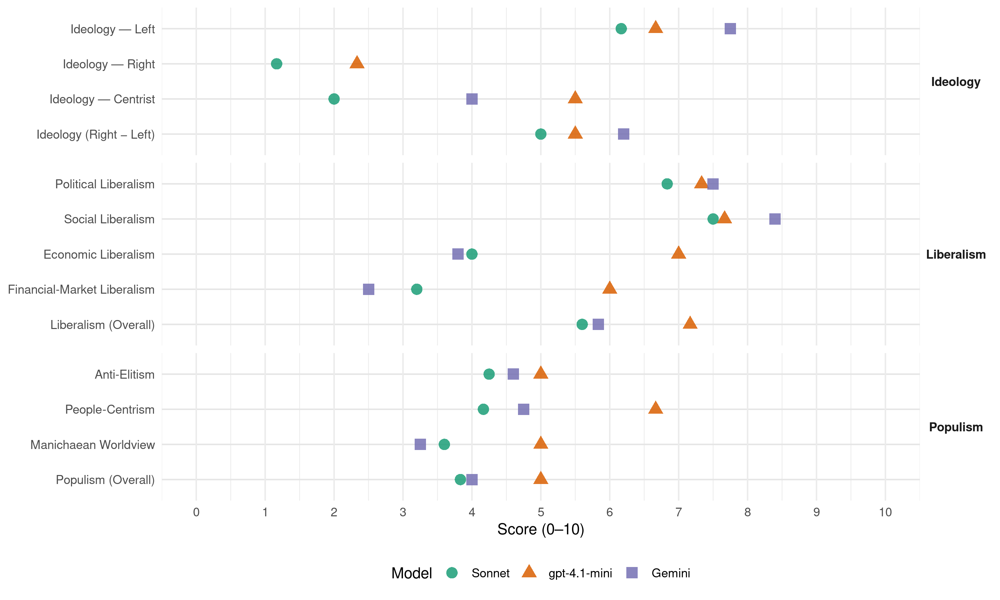

SLD (Poland, 2011)
manifesto_id 92210_201110
Get full text: This site shows derived annotations and short verbatim quotes only. The full manifesto text is © Manifesto Project / WZB — obtain it via manifesto-project.wzb.eu using the manifesto_id above.
Headline scores
| Dimension | Sonnet | gpt-4.1-mini | Gemini |
|---|---|---|---|
| Populism (Overall) | 3.8 | 5.0 | 4.0 |
| Anti-Elitism | 4.2 | 5.0 | 4.6 |
| People-Centrism | 4.2 | 6.7 | 4.8 |
| Manichaean Worldview | 3.6 | 5.0 | 3.2 |
| Ideology (Right − Left) | 5.0 | 5.5 | 6.2 |
| Liberalism (Overall) | 5.6 | 7.2 | 5.8 |
| Political Liberalism | 6.8 | 7.3 | 7.5 |
| Social Liberalism | 7.5 | 7.7 | 8.4 |
| Economic Liberalism | 4.0 | 7.0 | 3.8 |
| Financial-Market Liberalism | 3.2 | 6.0 | 2.5 |
Evidence per dimension
Economic Liberalism
Gemini · score 3.0 · verified · chunk 1
“znalezieniu właściwej równowagi między rolą rynku”
Wszystko to można osiągnąć przy znalezieniu właściwej równowagi między rolą rynku i rolą państwa – jako niezbędnego regulatora
Gemini · score 3.0 · verified · chunk 2
“wstrzymać prywatyzację Poczty Polskiej”
Wstrzymać prywatyzację Poczty Polskiej sa przynajmniej do czasu przeprowadzenia restrukturyzacji.
Gemini · score 4.0 · verified · chunk 3
“promocji polskiej przedsiębiorczości, intensyfikacji wymiany”
Zwiększenie roli służby zagranicznej w promocji polskiej przedsiębiorczości, intensyfikacji wymiany handlowej i działalności inwestycyjnej;
Gemini · score 3.0 · verified · chunk 4
“nie wolno przerzucać na barki obywateli, ani na wolny rynek”
Tej odpowiedzialności, ciążącej instytucjonalnie przede wszystkim na Ministerstwie Edukacji Narodowej, nie wolno przerzucać na barki obywateli, ani na wolny rynek usług edukacyjnych
Gemini · score 4.0 · mixed · chunk 5
“lasy państwowe nie będą podlegać reprywatyzacji i prywatyzacji”
polityce społecznej. Zarazem przyjęcie zasady, że lasy państwowe nie będą podlegać reprywatyzacji i prywatyzacji, iż utrzymana zostanie jednolitość
Gemini · score 6.0 · verified · chunk 6
“wspierać rozkwit prywatnej przedsiębiorczości w harmonii ze spójnością społeczną”
zapewnią pełne i efektywne wykorzystanie środków z funduszy europejskich, wzmocnią finanse samorządów lokalnych, będą wspierać rozkwit prywatnej przedsiębiorczości w harmonii ze spójnością społeczną, zwiększą aktywność zawodową Polaków
gpt-4.1-mini · score 7.0 · verified · chunk 1
“rynek ma służyć ludziom, a nie ludzie rynkom”
Wszystko to można osiągnąć przy znalezieniu właściwej równowagi między rolą rynku i rolą państwa – jako niezbędnego regulatora szeregu procesów społeczno-gospodarczych, a nie tylko „nocnego stróża”. Rynku nic nie zastąpi, ale to rynki mają służyć ludziom, a nie ludzie rynkom!
gpt-4.1-mini · score 8.0 · verified · chunk 2
“wzrost nakładów na infrastrukturę kolejową, w ciągu roku do co najmniej 10 mld zł na inwestycje”
SLD uważa za niezbędne przyjęcie programu ratunkowego dla polskiej kolei, tak by zrealizować następujące cele: Wzrost przewozów pasażerskich o ok. 35% w okresie 3 lat i radykalna poprawa jakości podróżowania, w tym skrócenie czasu dojazdu do pracy, szkół i w celach biznesowych. Wzrost przewozów towarowych w okresie 5 lat o co najmniej 30%; Wzrost nakładów na infrastrukturę kolejową, w ciągu roku do co najmniej 10 mld zł na inwestycje i 5 mld zł na utrzymanie, co umożliwi stopniową rewitalizację techniczną kolei;
gpt-4.1-mini · score 7.0 · verified · chunk 3
“Zwiększenie roli służby zagranicznej w promocji polskiej przedsiębior-czości, intensyfikacji wymiany handlowej i działalności inwestycyjnej”
Zwiększenie roli służby zagranicznej w promocji polskiej przedsiębior-czości, intensyfikacji wymiany handlowej i działalności inwestycyjnej; Opracowanie otwartej i humanitarnej polityki migracyjnej RP, odpowia-dającej rozwiązaniom wspólnotowym,
gpt-4.1-mini · score 7.0 · verified · chunk 4
“Koszty świadczeń zdrowotnych muszą być precyzyjnie i rzetelnie liczone”
Koszty świadczeń zdrowotnych muszą być precyzyjnie i rzetelnie liczone, a wycena procedur powinna odpowiadać faktycznym nakładom (uwzględ-nienie kosztów lekarzy, sprzętu, elektryczności, eksploatacji, itp.); Podział środków wydawanych na ochronę zdrowia przez różne instytucje (budżet ministerstwa Zdrowia, NFZ, samorządy) musi być racjonalny i spra-wiedliwy.
gpt-4.1-mini · score 6.0 · verified · chunk 5
“Naszym celem jest prze- kształcenie Polski w najbar- dziej konkurencyjną gospo- darkę w Europie, zdolną do długofalowego wzro -stu gospodarczego”
Naszym celem jest prze- kształcenie Polski w najbar- dziej konkurencyjną gospo- darkę w Europie, zdolną do długofalowego wzro -stu gospodarczego w tempie około 5% rocznie oraz osiągnięcia obecnego poziomu i jakości życia w Europie Zachodniej w ciągu jednego pokolenia.
gpt-4.1-mini · score 7.0 · verified · chunk 6
“Uprościmy podatki i ograniczymy szarą strefę”
Uprościmy podatki i ograniczymy szarą strefę, podniesiemy jakość systemu edukacji i kwalifikacje zawodowe ludzi.
Sonnet · score 4.0 · verified · chunk 1
“właściwej równowagi między rolą rynku i rolą państwa”
Wszystko to można osiągnąć przy znalezieniu właściwej równowagi między rolą rynku i rolą państwa – jako niezbędnego regulatora szeregu procesów społeczno-gospodarczych
Sonnet · score 5.0 · mixed · chunk 2
“deregulacja rynku usług transportu lotniczego”
Wynikająca z tego faktu deregulacja rynku usług transportu lotniczego przyczyniła się do skokowego i bardzo wyraźnego wzrostu w przewozach
Sonnet · score 4.0 · verified · chunk 3
“zasady społecznej gospodarki rynkowej”
Doprowadzimy do zmian w Kodeksie Pracy; tak, aby – uwzględniając zasady społecznej gospodarki rynkowej – w rzeczywisty sposób zapobiegał on traktowaniu pracownika jako towaru
Sonnet · score 4.0 · verified · chunk 4
“wolny rynek usług edukacyjnych”
Tej odpowiedzialności, ciążącej instytucjonalnie przede wszystkim na Ministerstwie Edukacji Narodowej, nie wolno przerzucać na barki obywateli, ani na wolny rynek usług edukacyjnych
Sonnet · score 5.0 · mixed · chunk 5
“Przyjazny klimat dla biznesu”
Nasza wizja opiera się na pięciu filarach: szybki wzrost gospodarczy; Zdrowe finanse publiczne; Przyjazny klimat dla biznesu; Postęp technologiczny i innowacje; sprawiedliwy podział
Sonnet · score 5.0 · mixed · chunk 6
“Przyjazny klimat dla biznesu”
Naszym celem jest przekształcenie Polski w najbardziej konkurencyjną gospodarkę w Europie… Przyjazny klimat dla biznesu
Financial-Market Liberalism
Gemini · score 2.0 · verified · chunk 1
“bezwzględny prymat instytucji finansowych nad”
Nie wierzymy w bezwzględny prymat instytucji finansowych nad sytuacją ekonomiczną obywateli.
Gemini · score 2.0 · verified · chunk 2
“podatku od międzynarodowych przepływów kapitałowych”
jesteśmy za wprowadzeniem globalnego podatku od międzynarodowych przepływów kapitałowych i przeznaczeniem uzyskanych w ten sposób środków m.in. na pomoc rozwojową dla państw najuboższych;
Gemini · score 2.0 · verified · chunk 3
“podatku od międzynarodowych przepływów kapitałowych”
jesteśmy za wprowadzeniem globalnego podatku od międzynarodowych przepływów kapitałowych i przeznaczeniem uzyskanych w ten
Gemini · score 4.0 · verified · chunk 6
“wprowadzimy podatek od instytucji sektora finansowego”
największy przyrost wydatków publicznych dotyczył najsłabiej uposażonych gospodarstw domowych; Wprowadzimy podatek od instytucji sektora finansowego. Podatek, opłacany przez wszystkie instytucje sektora
gpt-4.1-mini · score 6.0 · verified · chunk 1
“Nie wierzymy w bezwzględny prymat instytucji finansowych nad sytuacją ekonomiczną obywateli”
Mamy jednak wobec Wspólnoty własne oczekiwania, związane z lepszym życiem dla ludzi i przełamywaniem kryzysu ekonomicznego. Nie wierzymy w bezwzględny prymat instytucji finansowych nad sytuacją ekonomiczną obywateli.
gpt-4.1-mini · score 6.0 · verified · chunk 3
“Współdziałanie na rzecz przezwyciężenia kryzysu finansowego Unii z zachowaniem socjalnego wymiaru polityki europejskiej”
Współdziałanie na rzecz przezwyciężenia kryzysu finansowego Unii z zachowaniem socjalnego wymiaru polityki europejskiej; Pogłębianie integracji europejskiej i zmniejszanie deficytu demokracji w UE,
gpt-4.1-mini · score 6.0 · verified · chunk 6
“Wprowadzimy podatek od instytucji sektora finansowego”
Wprowadzimy podatek od instytucji sektora finansowego, który będzie służył pokryciu strat powstałych w wyniku potencjalnego wybuchu kryzysu finansowego.
Sonnet · score 2.0 · verified · chunk 1
“Nie wierzymy w bezwzględny prymat instytucji finansowych”
Nie wierzymy w bezwzględny prymat instytucji finansowych nad sytuacją ekonomiczną obywateli. Dlatego SLD działać będzie na rzecz tych sił i koncepcji europejskich
Sonnet · score 3.0 · verified · chunk 2
“globalnego podatku od międzynarodowych przepływów kapitałowych”
jesteśmy za wprowadzeniem globalnego podatku od międzynarodowych przepływów kapitałowych i przeznaczeniem uzyskanych w ten sposób środków na pomoc rozwojową
Sonnet · score 3.0 · verified · chunk 3
“globalnego podatku od międzynarodowych przepływów kapitałowych”
jesteśmy za wprowadzeniem globalnego podatku od międzynarodowych przepływów kapitałowych i przeznaczeniem uzyskanych w ten sposób środków m.in. na pomoc rozwojową
Sonnet · score 4.0 · verified · chunk 5
“Rynki finansowe, parlament i zwykli obywatele”
Rynki finansowe, parlament i zwykli obywatele z konieczności muszą się opierać na szczątkowych analizach i prognozach dostarczanych przez nie zawsze w pełni obiektywne polskie i zagraniczne instytucje finansowe
Sonnet · score 4.0 · verified · chunk 6
“podatek od instytucji sektora finansowego”
Wprowadzimy podatek od instytucji sektora finansowego. Podatek, opłacany przez wszystkie instytucje sektora finansowego, stanowił będzie dochód budżetu
Political Liberalism
Gemini · score 8.0 · verified · chunk 1
“koncepcja współczesnego państwa demokratycznego”
strażnikiem trzech wartości, z których zrodziła się koncepcja współczesnego państwa demokratycznego. Pierwsza z tych wartości – WoLność
Gemini · score 7.0 · verified · chunk 2
“zasady demokratycznego państwa”
Filozofia cywilnej kontroli nie została wprowadzona w praktyce, mimo formalnej akceptacji zasady demokratycznego państwa.
Gemini · score 8.0 · verified · chunk 3
“zgodnej z wymogami demokratycznego i praworządnego”
określającej ustrój sądownictwa powszechnego w Polsce, zgodnej z wymogami demokratycznego i praworządnego państwa, przy wykorzystaniu dorobku
Gemini · score 8.0 · verified · chunk 4
“stojącego na straży konstytucyjnej zasady równości”
zbudowanie w Polsce sprawiedliwego, tolerancyjnego państwa, stojącego na straży konstytucyjnej zasady równości i wyposażonego w skuteczne mechanizmy
Gemini · score 7.0 · verified · chunk 5
“Eliminacja wszelkich przejawów cenzury w sztuce”
»ProPozycje Eliminacja wszelkich przejawów cenzury w sztuce. modyfikacja stosownych przepisów tak, by nie ograniczały
Gemini · score 7.0 · verified · chunk 6
“technologie teleinformatyczne wykorzystywane w szeroki, swobodny i otwarty sposób stanowią współczesną gwarancję demokracji”
dostępnych było za pośrednictwem sieci elektronicznych 100% usług administracji rządowej; technologie teleinformatyczne wykorzystywane w szeroki, swobodny i otwarty sposób stanowią współczesną gwarancję demokracji. Potwierdzają to doświadczenia innych państw
gpt-4.1-mini · score 8.0 · verified · chunk 1
“zasadzie „pomocniczości umacniającej uprawnienia obywateli i ich wspólnot” oraz o nakazie takiego funkcjonowania władz publicznych”
Konieczność zapewnienia obywatelom rzetelnej, kompetentnej, bezstronnej i życzliwej administracji wynika chociażby z preambuły Konstytucji, gdzie mowa jest o zasadzie „pomocniczości umacniającej uprawnienia obywateli i ich wspólnot” oraz o nakazie takiego funkcjonowania władz publicznych, by „działaniu instytucji publicznych zapewnić rzetelność i sprawność”.
gpt-4.1-mini · score 7.0 · verified · chunk 2
“cywilna kontrola nad armią jest obecnie utożsamiana przez kierownictwo mON z dowodzeniem siłami zbrojnymi”
Cywilna kontrola nad armią jest obecnie utożsamiana przez kierownictwo mON z dowodzeniem siłami zbrojnymi. taka jej interpretacja prowadzi do sytuacji, w której mON wykonując funkcje dowodzenia decyduje o dyslokacji dowództw i jednostek, ich wyposażeniu, stanie oraz obsadzie stanowisk. siły zbrojne uzależnione są coraz bardziej od bieżących uwarunkowań politycznych i rządzących koalicji.
gpt-4.1-mini · score 7.0 · verified · chunk 3
“Doprowadzenie do ratyfikacji Karty Praw Podstawowych UE bez żadnych ograniczeń”
Doprowadzenie do ratyfikacji Karty Praw Podstawowych UE bez żadnych ograniczeń czy zastrzeżeń, co leży w interesie polskiego społeczeństwa.
gpt-4.1-mini · score 8.0 · verified · chunk 4
“art 32 Konstytucji RP mówi: Wszyscy są wobec prawa równi”
2 RÓWNOŚĆ PŁCI I WALKA Z DYSKRYMINACJO artykuł 32 Konstytucji RP mówi: Wszyscy są wobec prawa równi. art 33 dodaje: Kobieta i mężczyzna w Rzeczypospolitej Polskiej mają równe prawa w życiu rodzinnym, politycznym, społecznym i gospodarczym Oba te zapisy – zdawałoby się, zupełnie oczywiste w Europie XXi wieku – w Polsce nadal uważane bywają za kontrowersyjne.
gpt-4.1-mini · score 7.0 · verified · chunk 5
“Konstytucji RP. ich skuteczne urzeczywistnianie wymaga, by sprawy kultury stały się w większym stopniu, aniżeli dzieje się to dziś, przedmiotem zainteresowania, analizy i skutecznego działania władz publicznych”
Fundamentem naszego myślenia o kulturze są przepisy artykułów 6 i 73 Konstytucji RP. ich skuteczne urzeczywistnianie wymaga, by sprawy kultury stały się w większym stopniu, aniżeli dzieje się to dziś, przedmiotem zainteresowania, analizy i skutecznego działania władz publicznych wszystkich szczebli.
gpt-4.1-mini · score 7.0 · verified · chunk 6
“Powołamy Radę fiskalną, apolityczne ciało analityczno-doradcze Sejmu”
Powołamy Radę fiskalną, apolityczne ciało analityczno-doradcze Sejmu, którego zadaniem będzie stanie na straży przejrzystości finansów publicznych.
Sonnet · score 7.0 · verified · chunk 1
“dyktaturę większości powinien zastąpić respekt dla mniejszości”
Sojusz Lewicy Demokratycznej chce demokracji opartej na dialogu i poszukiwaniu porozumienia: dyktaturę większości powinien zastąpić respekt dla mniejszości.
Sonnet · score 7.0 · verified · chunk 2
“wartościach demokratycznych, wolnej od historycznych”
prowadzenie stabilnej, przewidywalnej i pragmatycznej polityki zagranicznej, opartej na wartościach demokratycznych, wolnej od historycznych, szkodliwych dla państwa resentymentów
Sonnet · score 8.0 · verified · chunk 3
“niezależności władzy sądowniczej oraz niezawisłości sędziowskiej”
Priorytetem SLD w tej dziedzinie jest ścisłe respektowanie niezależności władzy sądowniczej oraz niezawisłości sędziowskiej
Sonnet · score 7.0 · verified · chunk 4
“przekonaniom demokratycznym”
jest jednym z filarów nowoczesnego państwa, nośnikiem wartości kulturowych, przyczynia się do rozwijania tożsamości, poczucia społecznej przynależności, kształtowania obywatelskich postaw, tolerancji i przekonaniom demokratycznym
Sonnet · score 6.0 · verified · chunk 5
“Niezależność i pluralizm tej agencji”
Zaprzestać trzeba praktyk łamania Ustawy o PaP z 1997 r. Niezależność i pluralizm tej agencji są dla lewicy wartościami nadrzędnymi
Sonnet · score 6.0 · verified · chunk 6
“transparentne na każdym etapie”
Zamówienia publiczne powinny być transparentne na każdym etapie. Wszystkie te warunki wzmocnione powinny być poprzez wprowadzenie rzetelnej oceny
Liberalism (Overall)
Gemini · score 6.0 · verified · chunk 1
“koncepcja współczesnego państwa demokratycznego”
strażnikiem trzech wartości, z których zrodziła się koncepcja współczesnego państwa demokratycznego. Pierwsza z tych wartości – WoLność
Gemini · score 4.0 · verified · chunk 2
“zasady demokratycznego państwa”
Filozofia cywilnej kontroli nie została wprowadzona w praktyce, mimo formalnej akceptacji zasady demokratycznego państwa.
Gemini · score 6.0 · verified · chunk 3
“zgodnej z wymogami demokratycznego i praworządnego”
określającej ustrój sądownictwa powszechnego w Polsce, zgodnej z wymogami demokratycznego i praworządnego państwa, przy wykorzystaniu dorobku
Gemini · score 7.0 · verified · chunk 4
“stojącego na straży konstytucyjnej zasady równości”
zbudowanie w Polsce sprawiedliwego, tolerancyjnego państwa, stojącego na straży konstytucyjnej zasady równości i wyposażonego w skuteczne mechanizmy
Gemini · score 6.0 · verified · chunk 5
“Eliminacja wszelkich przejawów cenzury w sztuce”
»ProPozycje Eliminacja wszelkich przejawów cenzury w sztuce. modyfikacja stosownych przepisów tak, by nie ograniczały
Gemini · score 6.0 · verified · chunk 6
“wspierać rozkwit prywatnej przedsiębiorczości w harmonii ze spójnością społeczną”
zapewnią pełne i efektywne wykorzystanie środków z funduszy europejskich, wzmocnią finanse samorządów lokalnych, będą wspierać rozkwit prywatnej przedsiębiorczości w harmonii ze spójnością społeczną, zwiększą aktywność zawodową Polaków
gpt-4.1-mini · score 7.0 · verified · chunk 1
“zasadzie „pomocniczości umacniającej uprawnienia obywateli i ich wspólnot” oraz o nakazie takiego funkcjonowania władz publicznych”
Konieczność zapewnienia obywatelom rzetelnej, kompetentnej, bezstronnej i życzliwej administracji wynika chociażby z preambuły Konstytucji, gdzie mowa jest o zasadzie „pomocniczości umacniającej uprawnienia obywateli i ich wspólnot” oraz o nakazie takiego funkcjonowania władz publicznych, by „działaniu instytucji publicznych zapewnić rzetelność i sprawność”.
gpt-4.1-mini · score 7.0 · verified · chunk 2
“cywilna kontrola nad armią jest obecnie utożsamiana przez kierownictwo mON z dowodzeniem siłami zbrojnymi”
Cywilna kontrola nad armią jest obecnie utożsamiana przez kierownictwo mON z dowodzeniem siłami zbrojnymi. taka jej interpretacja prowadzi do sytuacji, w której mON wykonując funkcje dowodzenia decyduje o dyslokacji dowództw i jednostek, ich wyposażeniu, stanie oraz obsadzie stanowisk. siły zbrojne uzależnione są coraz bardziej od bieżących uwarunkowań politycznych i rządzących koalicji.
gpt-4.1-mini · score 7.0 · verified · chunk 3
“Doprowadzenie do ratyfikacji Karty Praw Podstawowych UE bez żadnych ograniczeń”
Doprowadzenie do ratyfikacji Karty Praw Podstawowych UE bez żadnych ograniczeń czy zastrzeżeń, co leży w interesie polskiego społeczeństwa.
gpt-4.1-mini · score 8.0 · verified · chunk 4
“art 32 Konstytucji RP mówi: Wszyscy są wobec prawa równi”
2 RÓWNOŚĆ PŁCI I WALKA Z DYSKRYMINACJO artykuł 32 Konstytucji RP mówi: Wszyscy są wobec prawa równi. art 33 dodaje: Kobieta i mężczyzna w Rzeczypospolitej Polskiej mają równe prawa w życiu rodzinnym, politycznym, społecznym i gospodarczym Oba te zapisy – zdawałoby się, zupełnie oczywiste w Europie XXi wieku – w Polsce nadal uważane bywają za kontrowersyjne.
gpt-4.1-mini · score 7.0 · verified · chunk 5
“Fundamentem naszego myślenia o kulturze są przepisy artykułów 6 i 73 Konstytucji RP”
Fundamentem naszego myślenia o kulturze są przepisy artykułów 6 i 73 Konstytucji RP. ich skuteczne urzeczywistnianie wymaga, by sprawy kultury stały się w większym stopniu, aniżeli dzieje się to dziś, przedmiotem zainteresowania, analizy i skutecznego działania władz publicznych wszystkich szczebli.
gpt-4.1-mini · score 7.0 · verified · chunk 6
“Powołamy Radę fiskalną, apolityczne ciało analityczno-doradcze Sejmu”
Powołamy Radę fiskalną, apolityczne ciało analityczno-doradcze Sejmu, którego zadaniem będzie stanie na straży przejrzystości finansów publicznych.
Sonnet · score 5.0 · verified · chunk 1
“rynki mają służyć ludziom, a nie ludzie rynkom”
Rynku nic nie zastąpi, ale to rynki mają służyć ludziom, a nie ludzie rynkom!
Sonnet · score 5.0 · mixed · chunk 2
“wartościach demokratycznych, wolnej od historycznych”
prowadzenie stabilnej, przewidywalnej i pragmatycznej polityki zagranicznej, opartej na wartościach demokratycznych, wolnej od historycznych, szkodliwych resentymentów
Sonnet · score 6.0 · verified · chunk 3
“Doprowadzenie do ratyfikacji Karty Praw Podstawowych UE”
Doprowadzenie do ratyfikacji Karty Praw Podstawowych UE bez żadnych ograniczeń czy zastrzeżeń, co leży w interesie polskiego społeczeństwa
Sonnet · score 6.0 · verified · chunk 4
“niezależnie od rasy, narodowości, wyznania, orientacji seksualnej”
wszyscy ludzie mają równe prawa; niezależnie od rasy, narodowości, wyznania, orientacji seksualnej, statusu materialnego, czy jakiejkolwiek innej właściwości.
Sonnet · score 6.0 · verified · chunk 5
“Eliminacja wszelkich przejawów cenzury w sztuce”
Eliminacja wszelkich przejawów cenzury w sztuce. Modyfikacja stosownych przepisów tak, by nie ograniczały one swobody wypowiedzi artystycznej i wolności słowa
Sonnet · score 5.0 · verified · chunk 6
“Przyjazny klimat dla biznesu”
Naszym celem jest przekształcenie Polski w najbardziej konkurencyjną gospodarkę w Europie… Przyjazny klimat dla biznesu
Anti-Elitism
Gemini · score 4.0 · verified · chunk 1
“dominacji wielkich grup kapitałowych i spekulacyjnej”
czy ważniejsze są aspiracje społeczne obywateli Europy, czy zachowanie porządku, opartego na dominacji wielkich grup kapitałowych i spekulacyjnej grze pieniędzmi podatników?
Gemini · score 4.0 · verified · chunk 2
“obietnica Platformy Obywatelskiej przerwania procesu psucia państwa”
Niestety, również w przypadku wojska obietnica Platformy Obywatelskiej przerwania procesu psucia państwa i naprawy sytuacji po rządach Prawa i Sprawiedliwości nie została spełniona.
Gemini · score 4.0 · verified · chunk 3
“demonstrując groźne przejawy arogancji, despotyzmu”
rozstrzygają na niekorzyść obywateli, demonstrując groźne przejawy arogancji, despotyzmu i nihilizmu urzędniczego.
Gemini · score 7.0 · verified · chunk 5
“lekceważenia zasad ochrony środowiska i zrównoważonego rozwoju, panującego wśród liberałów z Platformy Obywatelskiej”
jest to także przejaw znacznie głębszego problemu – całkowitego niezrozumienia lub lekceważenia zasad ochrony środowiska i zrównoważonego rozwoju, panującego wśród liberałów z Platformy Obywatelskiej, dla których środowisko to albo „zasób”
Gemini · score 4.0 · verified · chunk 6
“rządy prawicy spowodowały nadmierny rozrost biurokracji”
nie stymuluje się innowacyjności, nie ma konkretnego i spójnego pakietu zmian. rządy prawicy spowodowały nadmierny rozrost biurokracji. ponad stu-tysięczna armia nowych urzędników utrudnia
gpt-4.1-mini · score 7.0 · verified · chunk 1
“walka prawicy bogatych z prawicą biednych”
Ostatnie lata to – także z naszej winy – czas ofensywy prawicy. Czas, kiedy politykę zdominowała walka prawicy bogatych z prawicą biednych, prawicy „sytych i gnuśnych” z prawicą niezadowolonych i przepełnionych poczuciem krzywdy.
gpt-4.1-mini · score 3.0 · verified · chunk 2
“politycznymi naciskami i poszukiwaniem sposobów redukcji kosztów”
Likwidacja garnizonów i jednostek nie zawsze wynikała z jasno określonej polityki bezpieczeństwa państwa, a raczej wiązała się z politycznymi naciskami i poszukiwaniem sposobów redukcji kosztów. Niestety, również w przypadku wojska obietnica Platformy Obywatelskiej przerwania procesu psucia państwa i naprawy sytuacji po rządach Prawa i Sprawiedliwości nie została spełniona.
gpt-4.1-mini · score 3.0 · verified · chunk 3
“prawicowe rządy – zarówno PiS, jak i PO – nie uznają za pożądane budowanie konsensusu”
mimo istotnego wkładu lewicy w kreowanie polityki zagranicznej Polski w minionym dwudziestoleciu, prawicowe rządy – zarówno PiS, jak i PO – nie uznają za pożądane budowanie konsensusu w tej sferze życia publicznego.
gpt-4.1-mini · score 6.0 · verified · chunk 4
“antago-nizowanie pracodawców osób niepełnosprawnych z organizacjami poza-rządowymi”
owisk ze sobą. Przykładem niech będzie choćby antago-nizowanie pracodawców osób niepełnosprawnych z organizacjami poza-rządowymi działającymi w tym obszarze, pielęgniarek kontraktowych z pielęgniarkami pracującymi na etacie, przedstawicieli Otwartych Fundu-szy Emerytalnych i dobra budżetu państwa.
gpt-4.1-mini · score 5.0 · verified · chunk 5
“liberałów z Platformy Obywatelskiej, dla których środowisko to albo „zasób” nadający się do spieniężenia”
panującego wśród liberałów z Platformy Obywatelskiej, dla których środowisko to albo „zasób” nadający się do spieniężenia (jak w przypadku zamiaru prywatyzacji Lasów Państwowych), albo uciążliwa „bariera” w realizacji interesów.
gpt-4.1-mini · score 6.0 · verified · chunk 6
“Kreatywna księgowość w finansach publicznych osiąga szczyty”
Kreatywna księgowość w finansach publicznych osiąga szczyty, a wydatki publiczne rutynowo „zamiata się pod dywan”. Zmiany w podatkach wprowadza się z zaskoczenia.
Sonnet · score 4.0 · verified · chunk 2
“upolitycznienia kadry, wynikającego z potrzeby”
Prowadzi to do coraz większego upolitycznienia kadry, wynikającego z potrzeby utrzymywania ścisłych związków ze środowiskiem politycznym
Sonnet · score 4.0 · verified · chunk 3
“prawicowe rządy – zarówno PiS, jak i PO”
mimo istotnego wkładu lewicy w kreowanie polityki zagranicznej Polski w minionym dwudziestoleciu, prawicowe rządy – zarówno PiS, jak i PO – nie uznają za pożądane budowanie konsensusu
Sonnet · score 4.0 · verified · chunk 4
“rząd Donalda tuska w dużej mierze zaprzepaścił tę szansę”
Ustawa mogła być przełomem w walce z dyskryminacją… Niestety – rząd Donalda tuska w dużej mierze zaprzepaścił tę szansę. Nie zadbano także o skuteczne monitorowanie
Sonnet · score 5.0 · verified · chunk 6
“neoliberalne plany rządu premiera donalda Tuska”
neoliberalne plany rządu premiera donalda Tuska podważają fundamenty rozwoju gospodarczego, skazują Polskę na cywilizacyjny dryf
Ideology — Centrist
Gemini · score 4.0 · verified · chunk 2
“obietnica Platformy Obywatelskiej przerwania procesu psucia państwa”
Niestety, również w przypadku wojska obietnica Platformy Obywatelskiej przerwania procesu psucia państwa i naprawy sytuacji po rządach Prawa i Sprawiedliwości nie została spełniona.
gpt-4.1-mini · score 6.0 · verified · chunk 1
“my, szanując prawa rynku, opowiadamy się za jakością życia; prawica wybiera dobro rynku”
W skali miasta, miasteczka, wsi, a także państwa, podstawową osią sporu jest konflikt między dogmatycznie pojmowanym rynkiem, a jakością życia mieszkańców. my, szanując prawa rynku, opowiadamy się za jakością życia; prawica wybiera dobro rynku.
gpt-4.1-mini · score 5.0 · verified · chunk 2
“Za bezpieczeństwo narodowe odpowiada bowiem połączony potencjał państwa wsparty przez społeczeństwo obywatelskie”
Przekonanie, że za bezpieczeństwo narodowe odpowiadają wyłącznie Siły Zbrojne jest niebezpieczną iluzją. Za bezpieczeństwo narodowe odpowiada bowiem połączony potencjał państwa wsparty przez społeczeństwo obywatelskie. Przy takim spojrzeniu na problemy bezpieczeństwa nowego znaczenia nabiera np. przygotowanie innych struktur państwa do sprostania kryzysowym zagrożeniom, czy też potrzeba racjonalnego wychowania patriotycznego.
gpt-4.1-mini · score 5.0 · verified · chunk 3
“Stworzenie spójnej „Strategii polityki zagranicznej RP ”, w której przedstawione zostaną interesy narodowe Polski”
»ProPozycje Stworzenie spójnej „Strategii polityki zagranicznej RP ”, w której przedstawione zostaną interesy narodowe Polski oraz instrumenty ich realizacji – tak na poziomie strategicznym, jak i operacyjnym;
gpt-4.1-mini · score 6.0 · verified · chunk 6
“Kluczowe dla kraju decyzje są podejmowane z punktu widzenia kalendarza politycznego”
Kluczowe dla kraju decyzje są podejmowane z punktu widzenia kalendarza politycznego, a nie z punktu widzenia potrzeb gospodarki.
Sonnet · score 2.0 · verified · chunk 1
“O tym, ile nam wolno, decydują wyłącznie nasi Wyborcy”
O tym, ile nam wolno, decydują wyłącznie nasi Wyborcy. Zręby naszego generalnego programu przedstawiliśmy w przyjętej w wewnętrznym referendum
Sonnet · score 2.0 · verified · chunk 2
“armii w służbie obywateli”
sld wyPracował jasną wizję rozwoju Polskiej armii w służbie obywateli
Sonnet · score 2.0 · verified · chunk 3
“budowanie konsensusu w tej sferze życia publicznego”
prawicowe rządy – zarówno PiS, jak i PO – nie uznają za pożądane budowanie konsensusu w tej sferze życia publicznego
Sonnet · score 2.0 · verified · chunk 4
“Obywatele powinni mieć realny wpływ”
Prawo do opieki zdrowotnej… Pacjent powinien znaleźć się w centrum całego systemu. Obywatele powinni mieć realny wpływ na to, jak są wydawane pieniądze z ich składek.
Sonnet · score 2.0 · verified · chunk 5
“Sport powinien pozostawać ponad podziałami politycznymi”
Sport jest naszym zdaniem, obszarem działalności, który powinien pozostawać ponad podziałami politycznymi
Sonnet · score 2.0 · verified · chunk 6
“Lewica jako jedyna formacja polityczna”
Lewica jako jedyna formacja polityczna w III RP już dwa razy musiała ratować Polskę od skutków szkodliwej neoliberalnej polityki prawicy
Ideology — Left
Gemini · score 8.0 · verified · chunk 1
“przeciwstawienie się procesom neoliberalnej globalizacji”
Chodzi zwłaszcza o przeciwstawienie się procesom neoliberalnej globalizacji i obronę europejskiego modelu socjalnego.
Gemini · score 7.0 · verified · chunk 3
“sprawiedliwego ładu ekonomicznego. jesteśmy za wprowadzeniem”
podkreślać znaczenie prawa międzynarodowego i sprawiedliwego ładu ekonomicznego. jesteśmy za wprowadzeniem globalnego podatku od międzynarodowych przepływów
Gemini · score 8.0 · verified · chunk 5
“neoliberalne plany rządu premiera donalda Tuska podważają fundamenty”
na kolei będzie się dalej pogarszać. Nie będzie też skokowego wzrostu nakładów na edukację, od żłobka do uniwersytetu, na innowacje i postęp technologiczny oraz na kulturę. Ucierpią samorządowe inwestycje. neoliberalne plany rządu premiera donalda Tuska podważają fundamenty rozwoju gospodarczego, skazują Polskę na cywilizacyjny dryf
Gemini · score 8.0 · verified · chunk 6
“zlikwidujemy przywileje podatkowe dla najbogatszych”
eliminując wydatki niezwiązane z rzeczywistymi potrzebami nowoczesnych struktur siłowych państwa; Zlikwidujemy przywileje podatkowe dla najbogatszych. Według analiz ministerstwa Finansów
gpt-4.1-mini · score 9.0 · verified · chunk 1
“przeciwstawienie się procesom neoliberalnej globalizacji i obronę europejskiego modelu socjalnego”
Wierzymy, że lewica zna dobrą odpowiedź na to pytanie. Chodzi zwłaszcza o przeciwstawienie się procesom neoliberalnej globalizacji i obronę europejskiego modelu socjalnego.
gpt-4.1-mini · score 4.0 · verified · chunk 2
“zaprzepaszczono kilkuletnią pracę nad przygotowaniem dziesięcioletniego Narodowego Programu mieszkaniowego”
Zlikwidowano Krajowy Fundusz mieszkaniowy, oddając instrumenty finansowe wspierające rozwój mieszkalnictwa bankowi zainteresowanemu zyskiem. Wymuszono na Sejmie przyjęcie niekonstytucyjnej nowelizacji prawa budowlanego. Zaprzepaszczono kilkuletnią pracę nad przygotowaniem dziesięcioletniego Narodowego Programu mieszkaniowego wzorowanego na doświadczeniach europejskich.
gpt-4.1-mini · score 6.0 · verified · chunk 3
“jesteśmy za wprowadzeniem globalnego podatku od międzynarodowych przepływów kapitałowych”
Powinno ono podkreślać znaczenie prawa międzynarodowego i sprawiedliwego ładu ekonomicznego. jesteśmy za wprowadzeniem globalnego podatku od międzynarodowych przepływów kapitałowych i przeznaczeniem uzyskanych w ten sposób środków m.in. na pomoc rozwojową dla państw najuboższych;
gpt-4.1-mini · score 8.0 · verified · chunk 4
“Sojusz Lewicy Demokratycznej wierzy, że możliwe jest zbudowanie w Polsce sprawiedliwego, tolerancyjnego państwa”
mimo gwarancji konstytucyjnych polskie życie publiczne pełne jest przeja-wów wszelkiego rodzaju dyskryminacji. Sojusz Lewicy Demokratycznej wierzy, że możliwe jest zbudowanie w Polsce sprawiedliwego, tolerancyjnego państwa, stojącego na straży konstytucyjnej zasady równości i wyposażonego w skuteczne mechanizmy chroniące obywa-telki i obywateli przed dyskryminacją z jakichkolwiek przyczyn.
gpt-4.1-mini · score 6.0 · verified · chunk 5
“Lewica nie ma wątpliwości co do tego, iż decyzja w tej prawie winna należeć wyłącznie do nich – jesteśmy jak najdalsi od uprawianej przez katolicką prawicę propagandy”
Lewica nie ma wątpliwości co do tego, iż decyzja w tej prawie winna należeć wyłącznie do nich – jesteśmy jak najdalsi od uprawianej przez katolicką prawicę propagandy, w ramach której szybki ślub i wiele dzieci jest „obowiązkiem wobec Ojczyzny”.
gpt-4.1-mini · score 7.0 · verified · chunk 6
“Zlikwidujemy przywileje podatkowe dla najbogatszych”
Zlikwidujemy przywileje podatkowe dla najbogatszych. Budżet państwa traci rocznie ponad 65 mld złotych w wyniku stosowania 473 różnych przywilejów podatkowych.
Sonnet · score 7.0 · verified · chunk 1
“przeciwstawienie się procesom neoliberalnej globalizacji”
Chodzi zwłaszcza o przeciwstawienie się procesom neoliberalnej globalizacji i obronę europejskiego modelu socjalnego.
Sonnet · score 5.0 · verified · chunk 2
“globalnego podatku od międzynarodowych przepływów kapitałowych”
jesteśmy za wprowadzeniem globalnego podatku od międzynarodowych przepływów kapitałowych i przeznaczeniem uzyskanych w ten sposób środków m.in. na pomoc rozwojową
Sonnet · score 6.0 · verified · chunk 3
“jesteśmy za wprowadzeniem globalnego podatku od międzynarodowych przepływów kapitałowych”
Powinno ono podkreślać znaczenie prawa międzynarodowego i sprawiedliwego ładu ekonomicznego. jesteśmy za wprowadzeniem globalnego podatku od międzynarodowych przepływów kapitałowych
Sonnet · score 6.0 · verified · chunk 4
“Szpitale powinny służyć dobru wspólnemu”
Szpitale powinny służyć dobru wspólnemu, a ich nadrzędnym celem powinna być ochrona zdrowia – nie zaś wypracowywanie zysku. Dlatego muszą zachować publiczny, niekomercyjny charakter.
Sonnet · score 6.0 · verified · chunk 5
“sprawiedliwy podział owoców wzrostu”
Wiemy jak przyspieszyć wzrost gospodarczy, ograniczyć bezrobocie, sprawiedliwie dzielić owoce wzrostu i pomóc polskiej gospodarce osiągnąć światowy poziom konkurencyjności
Sonnet · score 7.0 · verified · chunk 6
“sprawiedliwy podział dochodu narodowego”
zapewnią bardziej sprawiedliwy podział dochodu narodowego, zwiększający spójność społeczną i ogólną jakość życia
Ideology (Right − Left)
Gemini · score 7.0 · verified · chunk 1
“przeciwstawienie się procesom neoliberalnej globalizacji”
Chodzi zwłaszcza o przeciwstawienie się procesom neoliberalnej globalizacji i obronę europejskiego modelu socjalnego.
Gemini · score 3.0 · verified · chunk 2
“obietnica Platformy Obywatelskiej przerwania procesu psucia państwa”
Niestety, również w przypadku wojska obietnica Platformy Obywatelskiej przerwania procesu psucia państwa i naprawy sytuacji po rządach Prawa i Sprawiedliwości nie została spełniona.
Gemini · score 6.0 · verified · chunk 3
“sprawiedliwego ładu ekonomicznego. jesteśmy za wprowadzeniem”
podkreślać znaczenie prawa międzynarodowego i sprawiedliwego ładu ekonomicznego. jesteśmy za wprowadzeniem globalnego podatku od międzynarodowych przepływów
Gemini · score 8.0 · verified · chunk 5
“neoliberalne plany rządu premiera donalda Tuska podważają fundamenty”
na kolei będzie się dalej pogarszać. Nie będzie też skokowego wzrostu nakładów na edukację, od żłobka do uniwersytetu, na innowacje i postęp technologiczny oraz na kulturę. Ucierpią samorządowe inwestycje. neoliberalne plany rządu premiera donalda Tuska podważają fundamenty rozwoju gospodarczego, skazują Polskę na cywilizacyjny dryf
Gemini · score 7.0 · verified · chunk 6
“zlikwidujemy przywileje podatkowe dla najbogatszych”
eliminując wydatki niezwiązane z rzeczywistymi potrzebami nowoczesnych struktur siłowych państwa; Zlikwidujemy przywileje podatkowe dla najbogatszych. Według analiz ministerstwa Finansów
gpt-4.1-mini · score 7.0 · verified · chunk 1
“przeciwstawienie się procesom neoliberalnej globalizacji i obronę europejskiego modelu socjalnego”
Wierzymy, że lewica zna dobrą odpowiedź na to pytanie. Chodzi zwłaszcza o przeciwstawienie się procesom neoliberalnej globalizacji i obronę europejskiego modelu socjalnego.
gpt-4.1-mini · score 4.0 · verified · chunk 2
“Narodowy charakter armii tzn. przygotowanie Sił Zbrojnych do podejmowania interwencji na terenie kraju”
Narodowy charakter armii tzn. przygotowanie Sił Zbrojnych do podejmowania interwencji na terenie kraju i stopniowe wygaszanie misji zagranicznych; uważamy, że wojsko nie powinno ograniczać swojego stanu poniżej 100 000 żołnierzy; Racjonalne przeanalizowanie koncepcji NSR, określenie wizji, celów strategicznych ich istnienia, struktury i stanu liczebnego w kontekście potrzeb bezpieczeństwa kraju, zobowiązań sojuszniczych i możliwości finansowych państwa;
gpt-4.1-mini · score 5.0 · verified · chunk 3
“jesteśmy za wprowadzeniem globalnego podatku od międzynarodowych przepływów kapitałowych”
Powinno ono podkreślać znaczenie prawa międzynarodowego i sprawiedliwego ładu ekonomicznego. jesteśmy za wprowadzeniem globalnego podatku od międzynarodowych przepływów kapitałowych i przeznaczeniem uzyskanych w ten sposób środków m.in. na pomoc rozwojową dla państw najuboższych;
gpt-4.1-mini · score 6.0 · verified · chunk 4
“Sojusz Lewicy Demokratycznej wierzy, że możliwe jest zbudowanie w Polsce sprawiedliwego, tolerancyjnego państwa”
mimo gwarancji konstytucyjnych polskie życie publiczne pełne jest przeja-wów wszelkiego rodzaju dyskryminacji. Sojusz Lewicy Demokratycznej wierzy, że możliwe jest zbudowanie w Polsce sprawiedliwego, tolerancyjnego państwa, stojącego na straży konstytucyjnej zasady równości i wyposażonego w skuteczne mechanizmy chroniące obywa-telki i obywateli przed dyskryminacją z jakichkolwiek przyczyn.
gpt-4.1-mini · score 5.0 · verified · chunk 5
“Lewica nie ma wątpliwości co do tego, iż decyzja w tej prawie winna należeć wyłącznie do nich – jesteśmy jak najdalsi od uprawianej przez katolicką prawicę propagandy”
Lewica nie ma wątpliwości co do tego, iż decyzja w tej prawie winna należeć wyłącznie do nich – jesteśmy jak najdalsi od uprawianej przez katolicką prawicę propagandy, w ramach której szybki ślub i wiele dzieci jest „obowiązkiem wobec Ojczyzny”.
gpt-4.1-mini · score 6.0 · verified · chunk 6
“Kreatywna księgowość w finansach publicznych osiąga szczyty”
Kreatywna księgowość w finansach publicznych osiąga szczyty, a wydatki publiczne rutynowo „zamiata się pod dywan”. Zmiany w podatkach wprowadza się z zaskoczenia.
Sonnet · score 6.0 · verified · chunk 1
“obronę europejskiego modelu socjalnego”
Chodzi zwłaszcza o przeciwstawienie się procesom neoliberalnej globalizacji i obronę europejskiego modelu socjalnego.
Sonnet · score 3.0 · verified · chunk 2
“globalnego podatku od międzynarodowych przepływów kapitałowych”
jesteśmy za wprowadzeniem globalnego podatku od międzynarodowych przepływów kapitałowych i przeznaczeniem uzyskanych w ten sposób środków m.in. na pomoc rozwojową
Sonnet · score 5.0 · verified · chunk 3
“podatek od międzynarodowych transakcji kapitałowych”
istotnym elementem nowego ładu stać się powinien podatek od międzynarodowych transakcji kapitałowych
Sonnet · score 5.0 · verified · chunk 4
“Szpitale powinny służyć dobru wspólnemu”
Szpitale powinny służyć dobru wspólnemu, a ich nadrzędnym celem powinna być ochrona zdrowia – nie zaś wypracowywanie zysku. Dlatego muszą zachować publiczny, niekomercyjny charakter.
Sonnet · score 5.0 · verified · chunk 5
“Polska lewica prezentuje alternatywny program”
Polska lewica prezentuje alternatywny program długofalowego rozwoju, który opiera się na uniwersalnym systemie polityki społecznej oraz publicznych inwestycjach
Sonnet · score 6.0 · verified · chunk 6
“sprawiedliwy podział dochodu narodowego”
zapewnią bardziej sprawiedliwy podział dochodu narodowego, zwiększający spójność społeczną i ogólną jakość życia
Ideology — Right
gpt-4.1-mini · score 2.0 · verified · chunk 1
“pełna realizacją wspólnej polityki migracyjnej Unii Europejskiej”
Pełna realizacją wspólnej polityki migracyjnej Unii Europejskiej Obcokrajowcy przybywający do nas legalnie, respektujący nasze przepisy, powinni w pełni korzystać z przysługującej im ochrony prawnej, a ich obyczaje i religia powinny być szanowane, o ile nie naruszają naszego porządku prawnego.
gpt-4.1-mini · score 2.0 · verified · chunk 2
“wojsko nie powinno ograniczać swojego stanu poniżej 100 000 żołnierzy”
Narodowy charakter armii tzn. przygotowanie Sił Zbrojnych do podejmowania interwencji na terenie kraju i stopniowe wygaszanie misji zagranicznych; uważamy, że wojsko nie powinno ograniczać swojego stanu poniżej 100 000 żołnierzy; Racjonalne przeanalizowanie koncepcji NSR, określenie wizji, celów strategicznych ich istnienia, struktury i stanu liczebnego w kontekście potrzeb bezpieczeństwa kraju, zobowiązań sojuszniczych i możliwości finansowych państwa;
gpt-4.1-mini · score 2.0 · verified · chunk 3
“polska prawi-cę, ponownie spychając nasz kraj do roli „chorego człowieka Europy””
te wszystkie osiągnięcia mogą zostać zmarnotrawione przez polską prawi-cę, ponownie spychając nasz kraj do roli „chorego człowieka Europy”, sta-wiającego na kontrowersje i konflikty, a przez to izolowanego i ośmieszane-go na arenie międzynarodowej.
gpt-4.1-mini · score 2.0 · verified · chunk 4
“konserwatywna prawica wciąż nie ma przekonania do tego, iż kobieta i mężczyzna są sobie równi”
art 33 dodaje: Kobieta i mężczyzna w Rzeczypospolitej Polskiej mają równe prawa w życiu rodzinnym, politycznym, społecznym i gospodarczym Oba te zapisy – zdawałoby się, zupełnie oczywiste w Europie XXi wieku – w Polsce nadal uważane bywają za kontrowersyjne. konserwatywna prawica wciąż nie ma przekonania do tego, iż kobieta i mężczyzna są sobie równi w każdym obszarze, a wszyscy ludzie mają równe prawa;
gpt-4.1-mini · score 3.0 · verified · chunk 5
“prawicę uważa, że odpowiedzią na problemy społeczne zrodzone przez tzw. uelastycznienie kodeksu pracy i komercjalizację kolejnych sfer życia jest dalsze ograniczanie praw pracowniczych”
Rządząca dziś w Polsce prawica uważa, że odpowiedzią na problemy społeczne zrodzone przez tzw. uelastycznienie kodeksu pracy i komercjalizację kolejnych sfer życia jest dalsze ograniczanie praw pracowniczych, w tym związkowych, a także wcielanie w życie zasady „jeszcze więcej rynku w usługach publicznych, jeszcze mniej państwa w gospodarce i polityce społecznej”.
gpt-4.1-mini · score 3.0 · verified · chunk 6
“Otwarcie polskiego rynku pracy dla imigracji z krajów Partnerstwa Wschodniego”
Należy otworzyć polski rynek pracy dla imigracji z krajów Partnerstwa Wschodniego oraz promować wysoko wykwalifikowaną imigrację.
Sonnet · score 1.0 · verified · chunk 1
“polityki migracyjnej Unii Europejskiej”
Pełna realizacją wspólnej polityki migracyjnej Unii Europejskiej Obcokrajowcy przybywający do nas legalnie, respektujący nasze przepisy, powinni w pełni korzystać z przysługującej im ochrony prawnej
Sonnet · score 2.0 · verified · chunk 2
“narodowym charakterze”
Zapomina się przy tym o ich narodowym charakterze. tymczasem w obecnych warunkach militarnego bezpieczeństwa Polski
Sonnet · score 1.0 · verified · chunk 3
“humanitarnej polityki migracyjnej RP”
Opracowanie otwartej i humanitarnej polityki migracyjnej RP, odpowiadającej rozwiązaniom wspólnotowym, pozwalającej skutecznie uniknąć ekonomicznej, społecznej i kulturowej alienacji imigrantów
Sonnet · score 1.0 · verified · chunk 4
“polityki imigracyjnej praktycznie się nie toczy”
W Polsce, jako państwie o bardzo jednolitej strukturze narodowościowej, dyskusja na temat polityki imigracyjnej praktycznie się nie toczy. jedynie od czasu do czasu do mediów trafiają informacje
Sonnet · score 1.0 · verified · chunk 5
“dziedzictwa narodowego i ochrony zabytków”
Uznając wagę dziedzictwa narodowego i ochrony zabytków, należy krytycznie ocenić poziom nakładów finansowych na ten cel
Sonnet · score 1.0 · verified · chunk 6
“otworzą nasz kraj na napływ siły roboczej”
otworzą nasz kraj na napływ siły roboczej z zagranicy, zapewnią bardziej sprawiedliwy podział dochodu narodowego
Manichaean Worldview
Gemini · score 3.0 · verified · chunk 1
“walka prawicy bogatych z prawicą biednych”
Czas, kiedy politykę zdominowała walka prawicy bogatych z prawicą biednych, prawicy „sytych i gnuśnych” z prawicą niezadowolonych
Gemini · score 3.0 · verified · chunk 3
“obywatele chcą oszukać swoje państwo”
tworzone jest w założeniu, że obywatele chcą oszukać swoje państwo i władza musi ich na tym przyłapać.
Gemini · score 5.0 · verified · chunk 5
“jest formą usankcjonowania wyzysku”
obszarach rynku pracy, gdzie znajduje to merytoryczne uzasadnienie, a nie jest formą usankcjonowania wyzysku; Zapewnienie ochrony związkowej
Gemini · score 2.0 · verified · chunk 6
“ratować Polskę od skutków szkodliwej neoliberalnej polityki”
Lewica jako jedyna formacja polityczna w III RP już dwa razy musiała ratować Polskę od skutków szkodliwej neoliberalnej polityki prawicy: raz w 1993 roku
gpt-4.1-mini · score 7.0 · verified · chunk 1
“walka o sprawiedliwe rozłożenie kosztów, mając na względzie jakość życia obywateli, a nie interes instytucji finansowych”
SLD działać będzie na rzecz tych sił i koncepcji europejskich, które w dobie kryzysu gospodarczego na pierwszym miejscu stawiają dobro człowieka i walczą o sprawiedliwe rozłożenie kosztów, mając na względzie jakość życia obywateli, a nie interes instytucji finansowych, czy „nastroje rynku”.
gpt-4.1-mini · score 3.0 · verified · chunk 2
“wojsko nie powinno ograniczać swojego stanu poniżej 100 000 żołnierzy”
Narodowy charakter armii tzn. przygotowanie Sił Zbrojnych do podejmowania interwencji na terenie kraju i stopniowe wygaszanie misji zagranicznych; uważamy, że wojsko nie powinno ograniczać swojego stanu poniżej 100 000 żołnierzy; Racjonalne przeanalizowanie koncepcji NSR, określenie wizji, celów strategicznych ich istnienia, struktury i stanu liczebnego w kontekście potrzeb bezpieczeństwa kraju, zobowiązań sojuszniczych i możliwości finansowych państwa;
gpt-4.1-mini · score 5.0 · mixed · chunk 6
“Rząd Platformy Obywatelskiej obiecuje, że w gospodarce będzie jeszcze gorzej”
Rząd Platformy Obywatelskiej obiecuje, że w gospodarce będzie jeszcze gorzej. Neoliberalne plany rządu premiera Donalda Tuska podważają fundamenty rozwoju gospodarczego.
Sonnet · score 4.0 · verified · chunk 1
“dominacji wielkich grup kapitałowych i spekulacyjnej grze pieniędzmi”
czy zachowanie porządku, opartego na dominacji wielkich grup kapitałowych i spekulacyjnej grze pieniędzmi podatników?
Sonnet · score 3.0 · verified · chunk 2
“ksenofobicznych i pseudoimperialnych dążeń części elit”
polska polityka zagraniczna uległa wynaturzeniu, stając się narzędziem wyrażania ksenofobicznych i pseudoimperialnych dążeń części elit politycznych
Sonnet · score 3.0 · verified · chunk 4
“konserwatywna prawica wciąż nie ma przekonania”
Oba te zapisy – zdawałoby się, zupełnie oczywiste w Europie XXI wieku – w Polsce nadal uważane bywają za kontrowersyjne. konserwatywna prawica wciąż nie ma przekonania do tego, iż kobieta i mężczyzna są sobie równi
Sonnet · score 4.0 · verified · chunk 5
“neoliberalne plany rządu premiera donalda Tuska”
neoliberalne plany rządu premiera donalda Tuska podważają fundamenty rozwoju gospodarczego, skazują Polskę na cywilizacyjny dryf i stagnację jakości życia Polaków
Sonnet · score 4.0 · verified · chunk 6
“szkodliwej neoliberalnej polityki prawicy”
Lewica jako jedyna formacja polityczna w III RP już dwa razy musiała ratować Polskę od skutków szkodliwej neoliberalnej polityki prawicy
People-Centrism
Gemini · score 5.0 · verified · chunk 1
“na pierwszym miejscu stawiają dobro człowieka”
które w dobie kryzysu gospodarczego na pierwszym miejscu stawiają dobro człowieka i walczą o sprawiedliwe rozłożenie kosztów
Gemini · score 5.0 · verified · chunk 3
“leży w interesie polskiego społeczeństwa”
bez żadnych ograniczeń czy zastrzeżeń, co leży w interesie polskiego społeczeństwa.
Gemini · score 6.0 · verified · chunk 5
“Zdecydowana większość społeczeństwa przeciwstawia się prywatyzacji”
skłoniło rząd do wycofania się z tych planów. Zdecydowana większość społeczeństwa przeciwstawia się prywatyzacji i reprywatyzacji lasów państwowych, deklaruje poparcie
Gemini · score 3.0 · verified · chunk 6
“stagnację jakości życia Polaków”
podważają fundamenty rozwoju gospodarczego, skazują Polskę na cywi- lizacyjny dryf i stagnację jakości życia Polaków. Lewica jako jedyna formacja polityczna
gpt-4.1-mini · score 8.0 · verified · chunk 1
“Celem Sojuszu Lewicy Demokratycznej jest zbudowanie solidarnego społeczeństwa obywatelskiego”
W tej ostatniej zaakcentowaliśmy, iż „Celem Sojuszu Lewicy Demokratycznej jest zbudowanie solidarnego społeczeństwa obywatelskiego, silnego i sprawnego państwa oraz rozwój efektywnej gospodarki, zdolnej do zaspokojenia rosnących potrzeb społecznych”.
gpt-4.1-mini · score 5.0 · verified · chunk 2
“Za bezpieczeństwo narodowe odpowiada bowiem połączony potencjał państwa wsparty przez społeczeństwo obywatelskie”
Przekonanie, że za bezpieczeństwo narodowe odpowiadają wyłącznie Siły Zbrojne jest niebezpieczną iluzją. Za bezpieczeństwo narodowe odpowiada bowiem połączony potencjał państwa wsparty przez społeczeństwo obywatelskie. Przy takim spojrzeniu na problemy bezpieczeństwa nowego znaczenia nabiera np. przygotowanie innych struktur państwa do sprostania kryzysowym zagrożeniom, czy też potrzeba racjonalnego wychowania patriotycznego.
gpt-4.1-mini · score 7.0 · verified · chunk 6
“Chodzi o zwiększenie aktywności zawodowej Polaków”
Będą wspierać rozkwit prywatnej przedsiębiorczości w harmonii ze spójnością społeczną, zwiększą aktywność zawodową Polaków, pobudzą przedsiębiorstwa do tworzenia nowych miejsc pracy.
Sonnet · score 6.0 · verified · chunk 1
“dobro człowieka i walczą o sprawiedliwe rozłożenie kosztów”
które w dobie kryzysu gospodarczego na pierwszym miejscu stawiają dobro człowieka i walczą o sprawiedliwe rozłożenie kosztów, mając na względzie jakość życia obywateli
Sonnet · score 3.0 · verified · chunk 2
“armii w służbie obywateli”
sld wyPracował jasną wizję rozwoju Polskiej armii w służbie obywateli
Sonnet · score 4.0 · verified · chunk 3
“ponad 80 procentowego poparcia polskiego społeczeństwa”
tak się niestety nie dzieje, mimo ponad 80 procentowego poparcia polskiego społeczeństwa dla procesu integracji
Sonnet · score 4.0 · verified · chunk 4
“Pacjent powinien znaleźć się w centrum całego systemu”
Prawo do opieki zdrowotnej, do poczucia bezpieczeństwa, do leczenia na najwyższym poziomie – to jedno z podstawowych praw… Pacjent powinien znaleźć się w centrum całego systemu. Obywatele powinni mieć realny wpływ
Sonnet · score 4.0 · verified · chunk 5
“Zdecydowana większość społeczeństwa przeciwstawia się”
Zdecydowana większość społeczeństwa przeciwstawia się prywatyzacji i reprywatyzacji lasów państwowych, deklaruje poparcie dla idei zachowania Państwowego Gospodarstwa Leśnego
Sonnet · score 4.0 · verified · chunk 6
“wzrost jakości życia wszystkich Polaków”
zmniejszenie nierówności dochodowych oraz wzrost jakości życia wszystkich Polaków. można to osiągnąć poprzez wzrost wydatków
Populism (Overall)
Gemini · score 4.0 · verified · chunk 1
“walka prawicy bogatych z prawicą biednych”
Czas, kiedy politykę zdominowała walka prawicy bogatych z prawicą biednych, prawicy „sytych i gnuśnych” z prawicą niezadowolonych
Gemini · score 3.0 · verified · chunk 2
“obietnica Platformy Obywatelskiej przerwania procesu psucia państwa”
Niestety, również w przypadku wojska obietnica Platformy Obywatelskiej przerwania procesu psucia państwa i naprawy sytuacji po rządach Prawa i Sprawiedliwości nie została spełniona.
Gemini · score 4.0 · verified · chunk 3
“demonstrując groźne przejawy arogancji, despotyzmu”
rozstrzygają na niekorzyść obywateli, demonstrując groźne przejawy arogancji, despotyzmu i nihilizmu urzędniczego.
Gemini · score 6.0 · verified · chunk 5
“lekceważenia zasad ochrony środowiska i zrównoważonego rozwoju, panującego wśród liberałów z Platformy Obywatelskiej”
jest to także przejaw znacznie głębszego problemu – całkowitego niezrozumienia lub lekceważenia zasad ochrony środowiska i zrównoważonego rozwoju, panującego wśród liberałów z Platformy Obywatelskiej, dla których środowisko to albo „zasób”
Gemini · score 3.0 · verified · chunk 6
“ratować Polskę od skutków szkodliwej neoliberalnej polityki”
Lewica jako jedyna formacja polityczna w III RP już dwa razy musiała ratować Polskę od skutków szkodliwej neoliberalnej polityki prawicy: raz w 1993 roku
gpt-4.1-mini · score 7.0 · verified · chunk 1
“walka prawicy bogatych z prawicą biednych”
Ostatnie lata to – także z naszej winy – czas ofensywy prawicy. Czas, kiedy politykę zdominowała walka prawicy bogatych z prawicą biednych, prawicy „sytych i gnuśnych” z prawicą niezadowolonych i przepełnionych poczuciem krzywdy.
gpt-4.1-mini · score 4.0 · verified · chunk 2
“politycznymi naciskami i poszukiwaniem sposobów redukcji kosztów”
Likwidacja garnizonów i jednostek nie zawsze wynikała z jasno określonej polityki bezpieczeństwa państwa, a raczej wiązała się z politycznymi naciskami i poszukiwaniem sposobów redukcji kosztów. Niestety, również w przypadku wojska obietnica Platformy Obywatelskiej przerwania procesu psucia państwa i naprawy sytuacji po rządach Prawa i Sprawiedliwości nie została spełniona.
gpt-4.1-mini · score 2.0 · verified · chunk 3
“prawicowe rządy – zarówno PiS, jak i PO – nie uznają za pożądane budowanie konsensusu”
mimo istotnego wkładu lewicy w kreowanie polityki zagranicznej Polski w minionym dwudziestoleciu, prawicowe rządy – zarówno PiS, jak i PO – nie uznają za pożądane budowanie konsensusu w tej sferze życia publicznego.
gpt-4.1-mini · score 6.0 · verified · chunk 4
“antago-nizowanie pracodawców osób niepełnosprawnych z organizacjami poza-rządowymi”
owisk ze sobą. Przykładem niech będzie choćby antago-nizowanie pracodawców osób niepełnosprawnych z organizacjami poza-rządowymi działającymi w tym obszarze, pielęgniarek kontraktowych z pielęgniarkami pracującymi na etacie, przedstawicieli Otwartych Fundu-szy Emerytalnych i dobra budżetu państwa.
gpt-4.1-mini · score 5.0 · verified · chunk 5
“liberałów z Platformy Obywatelskiej, dla których środowisko to albo „zasób” nadający się do spieniężenia”
panującego wśród liberałów z Platformy Obywatelskiej, dla których środowisko to albo „zasób” nadający się do spieniężenia (jak w przypadku zamiaru prywatyzacji Lasów Państwowych), albo uciążliwa „bariera” w realizacji interesów.
gpt-4.1-mini · score 6.0 · verified · chunk 6
“Kreatywna księgowość w finansach publicznych osiąga szczyty”
Kreatywna księgowość w finansach publicznych osiąga szczyty, a wydatki publiczne rutynowo „zamiata się pod dywan”. Zmiany w podatkach wprowadza się z zaskoczenia.
Sonnet · score 5.0 · verified · chunk 1
“rynki mają służyć ludziom, a nie ludzie rynkom”
Rynku nic nie zastąpi, ale to rynki mają służyć ludziom, a nie ludzie rynkom!
Sonnet · score 3.0 · verified · chunk 2
“upolitycznienia kadry, wynikającego z potrzeby”
Prowadzi to do coraz większego upolitycznienia kadry, wynikającego z potrzeby utrzymywania ścisłych związków ze środowiskiem politycznym
Sonnet · score 3.0 · verified · chunk 3
“prawicowe rządy widzą w polityce społecznej kulę u nogi”
Prawicowe rządy widzą w polityce społecznej kulę u nogi gospodarki. Polskie wydatki na nią należą do najniższych w całej Unii Europejskiej.
Sonnet · score 4.0 · verified · chunk 4
“rząd Donalda tuska w dużej mierze zaprzepaścił tę szansę”
Ustawa mogła być przełomem w walce z dyskryminacją… Niestety – rząd Donalda tuska w dużej mierze zaprzepaścił tę szansę. Nie zadbano także o skuteczne monitorowanie
Sonnet · score 4.0 · verified · chunk 5
“Lewica jako jedyna formacja polityczna”
Lewica jako jedyna formacja polityczna w III RP już dwa razy musiała ratować Polskę od skutków szkodliwej neoliberalnej polityki prawicy
Sonnet · score 4.0 · verified · chunk 6
“neoliberalne plany rządu premiera donalda Tuska”
neoliberalne plany rządu premiera donalda Tuska podważają fundamenty rozwoju gospodarczego, skazują Polskę na cywilizacyjny dryf
Social Liberalism